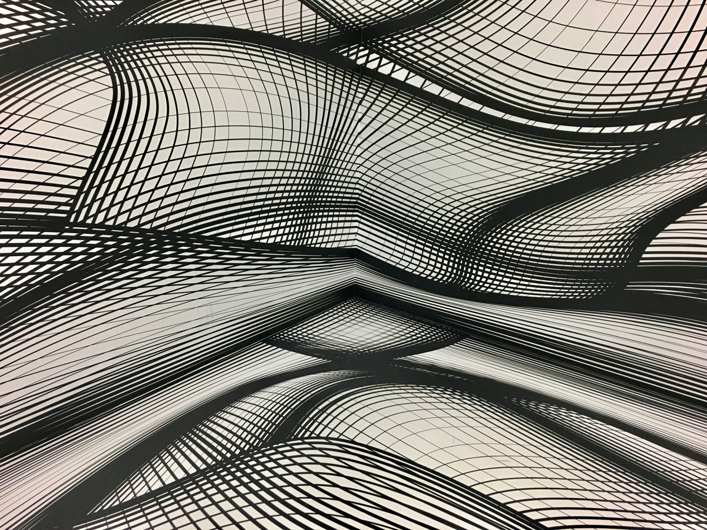

Builds, research, and a lot of sky.
I'm Ronak Toprani — I work on tech in finance by day and build products the rest of the time. Lately that means local-first tools and small on-device AI: focus software, wearables, and desk robots. I also love physics, astrophotography, and philosophy. This is where it all lives.

Latest build
Fixate — a Chrome extension that verifies focus with local, on-device gaze detection. No backend, no data leaves the machine.
Also shipping
whoomp (a local-first health app that reads biometrics on-device) and kōdō (a productivity dashboard run by local SLMs).
Recent note
New astrophotography — the C27 Crescent Nebula, M27 Dumbbell, and more, over in the Notes section.
Projects + Research
Selected research, builds, and experiments.
Notes
Short notes, and a growing astrophotography log.
Astrophotography
These photos are either taken with a Seestar S50 telescope or a canon mirrorless camera. In both cases, images are taken with long exposures and stacked.
Idea Graph
A current map linking projects, papers, and concepts.
The live force-directed graph is prototyped separately so it can be tuned on its own.
Open graph-lab.html →Reach Out
hmu for collaborations, questions, or just to say hi.
Emailronaktoprani@gmail.com
X@ronak859
LinkedIn/in/ronaktoprani
Based inToronto, Ontario